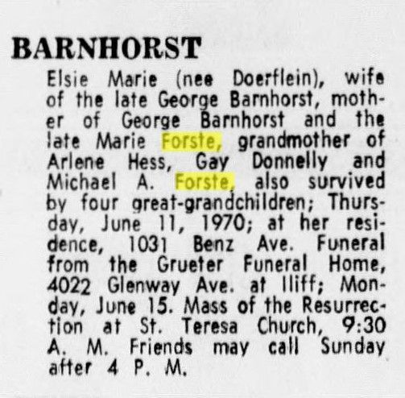
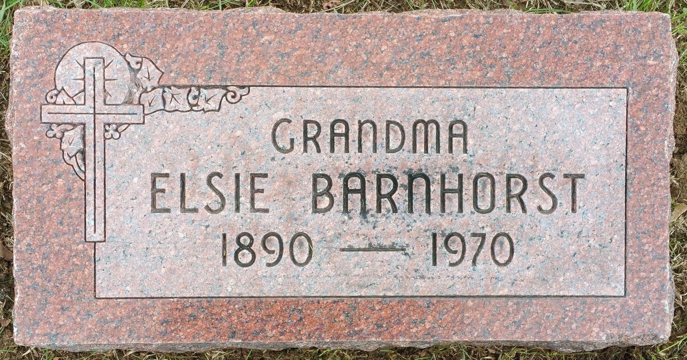
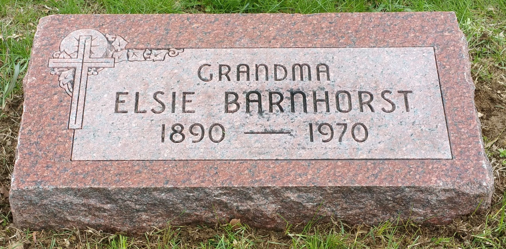

25 November 1890 Born according to her Find a Grave memorial.
By 1913 Wife of George A. Barnhorst; their son George Anthony was born 8 November 1913. The SS-5 transcription names Elsie M. Doerflein as his mother.
8 December 1916 Daughter Marie Elise Barnhorst born in Ohio, according to her Find a Grave memorial.
29 December 1951 Marie’s obituary names Elsie as her mother and George Barnhorst as her brother.
11 June 1970 Elsie died in Cincinnati. Her obituary identifies her as Elsie Marie (née Doerflein), wife of the late George Barnhorst, and mother of George and Marie Forste.
Life Story
Elsie Marie Doerflein Barnhorst’s 1970 obituary identifies her by her maiden name, calls her the wife of the late George Barnhorst, and names her children George Barnhorst and the late Marie Forste. It also names grandchildren Arlene Hess, Gay Donnelly, and Michael A. Forste. The newspaper clipping gives her residence as 1031 Benz Avenue, Cincinnati, and funeral details.
George’s 1922 death notice independently calls Elsie (née Doerflein) his beloved wife. Together, the two obituary clippings establish the George–Elsie household and Marie’s relationship as their daughter. Find a Grave’s linked family records identify Elsie’s parents as Jacob A. Doerflein and Elizabeth Horstman Doerflein, and list three Doerflein sisters; those links are compiled memorial data, not inspected vital records.
Photographs & Family Gallery

Elsie’s obituary clipping, uploaded to her Find a Grave memorial by John R. Hess on 17 May 2020. It names her husband, children and grandchildren and gives her residence and funeral details; newspaper title/date are not visible in the crop.Grave-marker photo, added to the Find a Grave memorial by James (Jim) F. Kelly on 1 June 2019. Inscription: “Grandma Elsie Barnhorst 1890–1970.”

Second photo of the same marker, added by Bob Pettit on 10 April 2018.

Third photo of the same marker, added by Bob Pettit on 10 April 2018. Kept separately to preserve every Find a Grave memorial photo.
Sources & Records
Elsie Barnhorst obituary clipping photo, uploaded to Find a Grave by John R. Hess on 17 May 2020; transcribes her as Elsie Marie (née Doerflein), wife of late George, mother of George and late Marie, grandmother of Arlene, Gay and Michael, and gives death date, residence, and funeral details. Newspaper masthead and issue date are cropped.
Marie’s parentage: Elsie’s own 1970 obituary directly says she was mother of “the late Marie Forste”; Marie’s obituary independently calls Mrs. Elsie Barnhorst her mother. This directly establishes Elsie as Marie’s mother.
George A. Barnhorst is Elsie’s husband: George’s 1922 death notice says “beloved husband of Elsie Barnhorst (nee Doerflein)”; Elsie’s obituary independently calls her wife of the late George Barnhorst. They are the working Gen VII parent couple. No civil marriage record located; their obituary wording supports the marriage.
Elsie’s own memorial links parents Jacob A. Doerflein and Elizabeth Horstman Doerflein, and siblings Lila, Genevieve, and Aurelia. These are compiled memorial relationships; separate parent profiles for Jacob and Elizabeth were added on 27 November 2026, while the sisters remain unprofiled.
All four Elsie memorial photographs are saved separately: one obituary clipping and three photographs of the same grave marker. Two marker photos were added on 10 Apr 2018 and one on 1 Jun 2019; all are retained.
The obituary clipping names grandchildren Arlene Hess, Gay Donnelly, and Michael A. Forste and gives her Cincinnati residence and funeral details. Newspaper masthead and issue date are cropped out.
Next: recover the newspaper masthead/issue citation for the 1970 clipping and original civil records if available; preserve rather than infer any missing details.
Updated 23 November 2026: added Elsie’s obituary, grave-marker photographs, and direct family relationships stated in the clipping.
Updated 27 November 2026: linked the parent names to their new individual profiles, added those profiles to Gen VIII, and preserved the existing Gen VII placement.
Edit or add to profile
No verified profile-contribution link is currently attached to this page.